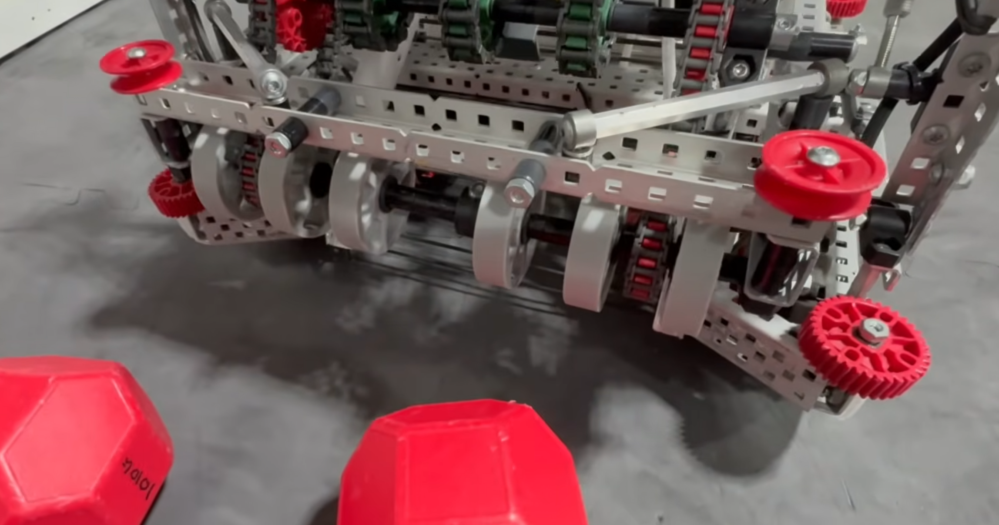
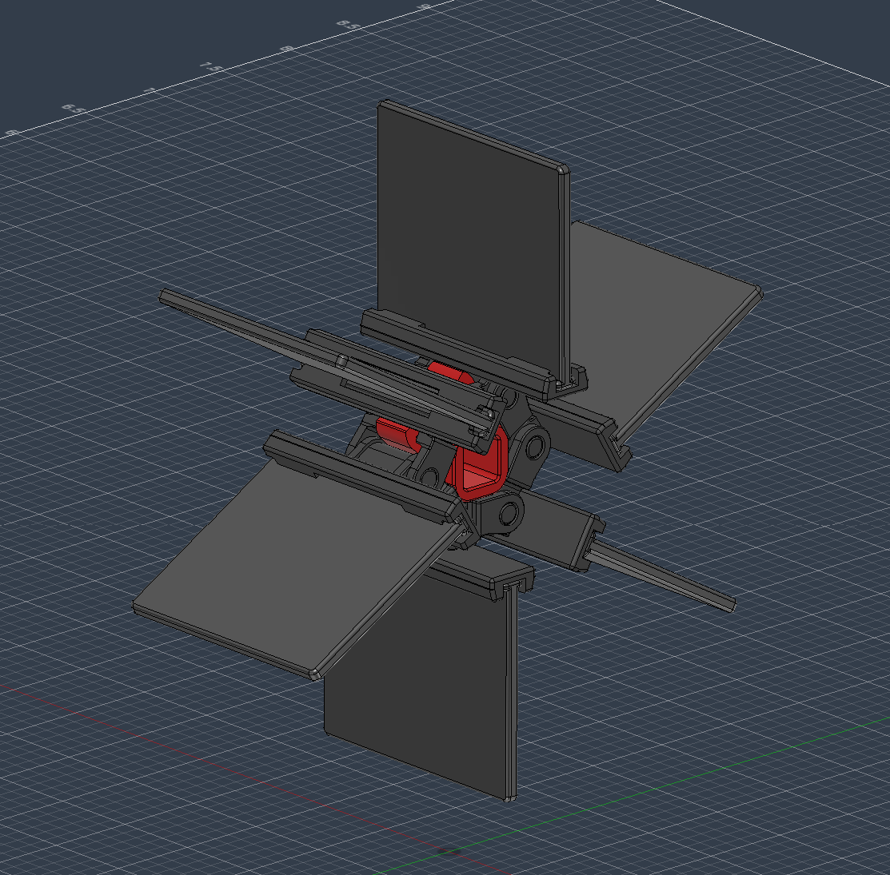
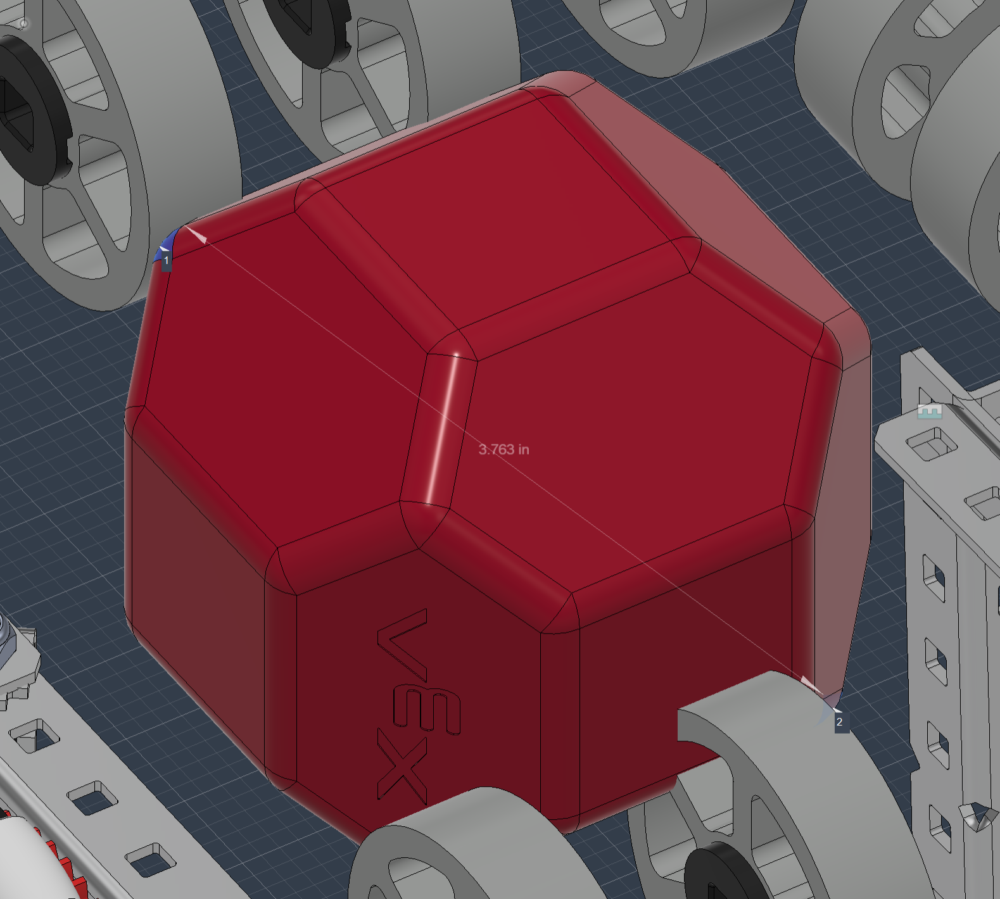
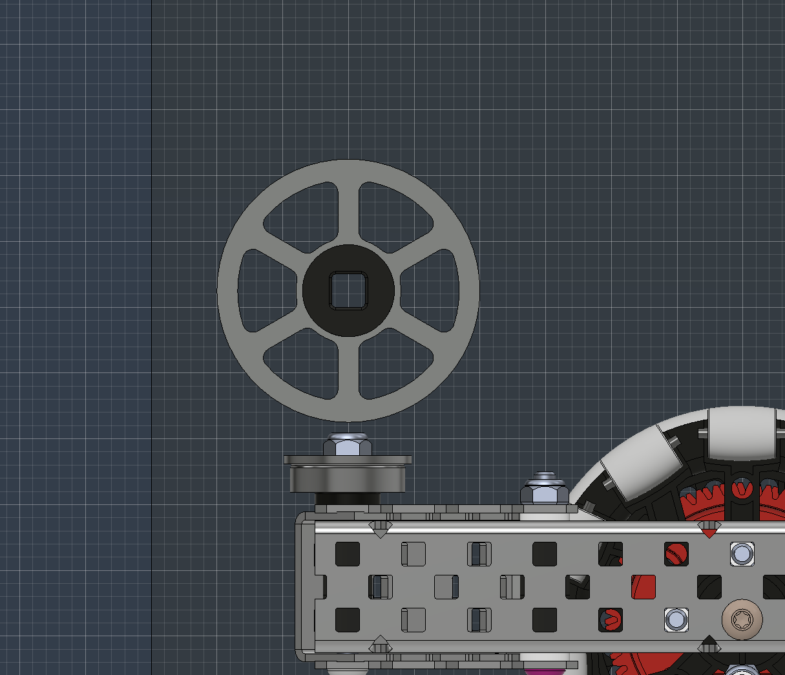
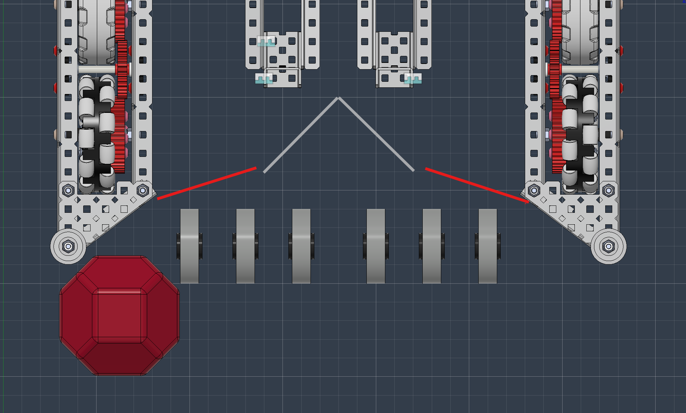
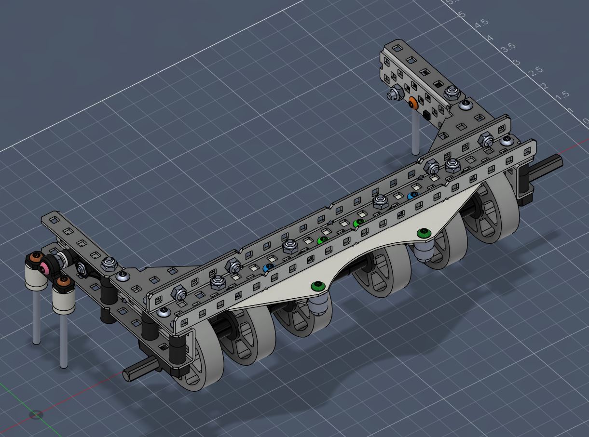
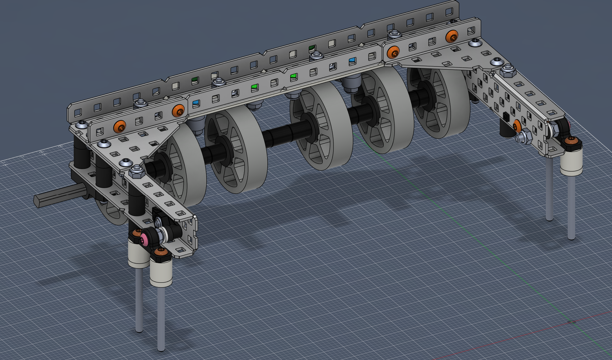

Edit History
| Date | Author |
|---|---|
| 2025-12-12 | Zach |
| 2025-12-13 | Zach |
| 2025-12-17 | Zach |
| 2026-01-06 | Daren |
| 2026-01-08 | Daren |
| 2026-01-10 | Daren |
| 2026-01-12 | Daren |
| 2026-01-13 | Daren |
| 2026-01-14 | Daren |
| 2026-01-17 | Daren |
| 2026-01-18 | Daren |
| 2026-01-20 | Daren |
Identify:¶
We need a good reliable intake.
Constraints:¶
- No jamming
- Quick
- Work with color sorting
- Light
- Not get tangled
- Get blocks from wall well
Our old bot uses rubber bands on large sprockets to intake blocks. It was in a fixed position; it doesn't move up and down to let blocks in, the rubber bands just deform around the block.
TODO: find where to put this
For the new intake we are thinking of either sticking with the rubber band intake, or switching to a flex wheel intake. a flex wheel intake is harder to make, as it has tighter tolerances of actually working, where rubber band intake requires almost no tuning. lets list out all the pros and cons
Brainstorm:¶
Rubber band intake¶
This intake type uses sprockets and rubber bands to make a spinning drum that intakes the blocks.

Pros¶
- Simple
- Little required tuning
- Can be static (not move up and down)
- Doesn't rely solely on friction, the gaps in the rubber bands act as little "slots" for the blocks to go into.
Cons¶
- Tangles with other robots easily
- Rubber bands break and it goes through a lot of them
- Jams if not done right (block can get stuck against the sprockets)
Flex wheel intake¶
This intake type uses a line of flex-wheels to grip the blocks and intake them

{kind=link}
Pros¶
- No constant replacements needed
- Generally smaller than a rubber band intake
- Harder to jam
Cons¶
- Once the flex wheels get dirty/dusty it barely works
- Need to be mounted on a pivot (move up and down)
Chain flap intake¶
This intake method uses sprockets with rubber-flap chains like so:

{kind=link}
Pros¶
- Doesn't need replacing
- Doesn't matter if it is dirty (doesn't rely on friction to much)
Cons¶
- Not as affective as rubber band or flex wheel intakes (when they are working well)
- It is "floppy"
- To be effective it needs to be big
Select:¶
Decision Matrix¶
| Criteria | Weight | Rubber Band | Flex Wheel | Chain Flap | Rubber Band Weighted | Flex Wheel Weighted | Chain Flap Weighted |
|---|---|---|---|---|---|---|---|
| No jamming | 5 | 3 | 4 | 4 | 15 | 20 | 20 |
| Quick intake | 3 | 4 | 4 | 2 | 12 | 12 | 6 |
| Works with color sorting | 3 | 2 | 4.5 | 2 | 6 | 13.5 | 6 |
| Lightweight | 2 | 4.5 | 2 | 3 | 9 | 4 | 6 |
| Doesn't tangle | 4 | 0 | 4 | 3.5 | 0 | 16 | 14 |
| Gets blocks from wall | 3 | 2.5 | 3 | 4 | 7.5 | 9 | 12 |
| Low maintenance | 2 | 2 | 3 | 5 | 4 | 6 | 10 |
| Consistent | 5 | 4 | 3 | 1 | 20 | 15 | 5 |
| Weighted Total | 73.5 | 95.5 | 79 |
Scoring Rationale¶
Rubber Band Intake: Strong on speed, wall pickup, and consistency. Loses points for tangling and high maintenance (constant band replacements).
Flex Wheel Intake: Works well with color sorting, quick, and doesn't tangle. Penalized for dust sensitivity and requiring a pivot mechanism.
Chain Flap Intake: Lowest maintenance. Main weaknesses are is its consistency, size, and mediocrity on everything else.
Selection:¶
Flex wheel intake
Repeat:¶
(But more specific this time)
Identify:¶
We have chosen to use a flex wheel intake, but there are more specific things that we need to decide: - Size of flex wheel - Height of flex wheels - Y position of flex wheels - Speed of intake - How to pivot intake - How to power intake - How wide to make the intake - Spacing of flex wheels
Brainstorm and Select:¶
Rapid Fire:¶
Size of flex wheel¶
1.625" or 2" 2" because it has more "squish" (give) than the 1.625" and that helps with grip and not needing to pivot as much.
Height of flex wheels¶
The flex wheels will have a absolute maximum distance from the ground of 3.25" because that is the smallest distance between any 2 opposite points on a block ~3.8"

{kind=link}
Y position of flex wheels¶
How far forward we want the intake. We need to stay in size, and we don't have much wiggle room, so the question is do we put it where it is in the image, or 0.5" forward:

{kind=link}
Speed of intake¶
Our bot can move at ~70in/s so it would be ideal to have the intake have a radial speed of 70in/s as well, for that we need a rpm of: $$ \pi \cdot d = \pi \cdot 2\text{ in} = 6.28\text{ in/rotation} $$ $$ \text{RPM} = \frac{70\text{ in}}{\text{ sec}} \cdot \frac{60\text{sec}}{\text{min}} \cdot \frac{\text{rotation}}{6.28\text{ in}}= $$ $$ \text{RPM} = \frac{70\cancel{\text{ in}}}{\cancel{\text{ sec}}} \cdot \frac{60\cancel{\text{sec}}}{\text{min}} \cdot \frac{\text{rotation}}{6.28\cancel{\text{ in}}}= \frac{4200\text{ rotation}}{6.28\text{ min}}= 668.78 \text{ RPM} $$
So, it looks like 600 RPM would be a good speed.
Match-load theoretical max speed¶
Zach wants to be able intake blocks as fast as they fall from a match-load tube. The tube has 6 blocks but one is already on the ground, so 5 blocks fall. Each block is 3.25" tall when stacked, and we'll treat them as spheres with diameter 3.625".
Time for each block to fall: Using \(h = \frac{1}{2}gt^2\) and solving for \(t = \sqrt{\frac{2h}{g}}\) with \(g = 386.1\text{ in/s}^2\) (\(9.8\text{ m/s}^2\)):
| Block | Fall Height | Time to ground |
|---|---|---|
| 1 | 0" | 0s |
| 2 | 3.25" | 0.130s |
| 3 | 6.5" | 0.183s |
| 4 | 9.75" | 0.225s |
| 5 | 13" | 0.259s |
| 6 | 16.25" | 0.290s |
The shortest gap between blocks is between block 5 and 6: \(0.290 - 0.259 = 0.031\text{s}\)
To intake a 3.625" block in 0.031s: $$ \text{Speed} = \frac{3.625\text{ in}}{0.031\text{ s}} = 117\text{ in/s} $$
Converting to RPM with 2" flex wheels: $$ \text{RPM} = \frac{117\text{ in}}{\text{sec}} \cdot \frac{60\text{ sec}}{\text{min}} \cdot \frac{\text{rotation}}{6.28\text{ in}}= $$ $$ \text{RPM} = \frac{117\cancel{\text{ in}}}{\cancel{\text{sec}}} \cdot \frac{60\cancel{\text{ sec}}}{\text{min}} \cdot \frac{\text{rotation}}{6.28\cancel{\text{ in}}}= \frac{7020\text{ rotation}}{6.28\text{ min}}= 1118\text{ RPM} $$
This theoretical max of 1118 RPM is faster than a blue motor (600 RPM). However, this assumes each block must be fully intaked before the next arrives. In practice, blocks can queue on the intake, so 600 RPM should still work for match-loading.
Time to clear a match-load tube: The last block hits the ground at 0.290s. After that, we need to intake 6 blocks at 600 RPM (70 in/s): $$ \text{Intake time} = \frac{6\text{ blocks} \cdot 3.625\text{ in/block}}{70\text{ in/s}} = \frac{21.75\text{ in}}{70\text{ in/s}} = 0.311\text{ s} $$
Total time to clear a match-load tube: $$ \text{Total} = 0.290\text{ s (falling)} + 0.311\text{ s (intaking)} = 0.601\text{ s} \approx \textbf{0.6 seconds} $$ Therefore (ahem... Zach) at 600 RPM we could theoretically clear a match-load tube in 0.6 seconds
How to pivot intake¶
In the past, I have seen a lot of intakes and/or match loaders that use normal 1x1 angles get bent, so we ether want to use 2C-channel or 1x1.5 made out of 3C for the pivot arms. We also don't want the pivot point too close to the intake, that way it has minimal X/Y movement when the Z moves.
How to power intake¶
The speed we want the intake is 600 RPM so we can just use a blue motor geared 1:1 to the intake wheels.
How wide to make the intake¶
We need to decide how many flex wheels we need and how to space them.
I say 6 flex wheels with a larger gap in the middle to help with match-loading.

{kind=link}
Implement/Design:¶
I designed out the intake with the chosen criteria, as well as adding a match load aligner and making it as rigid as possible
 
{kind=link}
{kind=link}
Repeat:¶
Identify:¶
We need this to integrate with color sorting and the lever(chamber). It needs to do a few things: - Deposit blocks into the sorting mech - Help move sorted blocks into the chambers